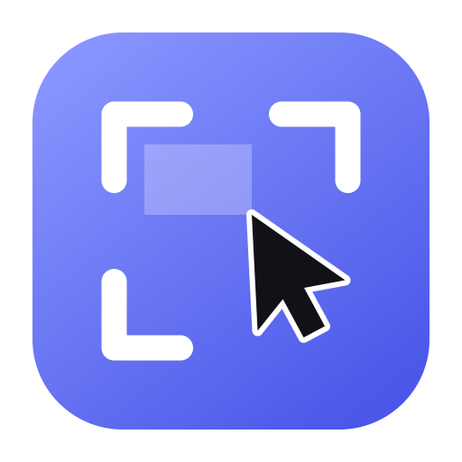
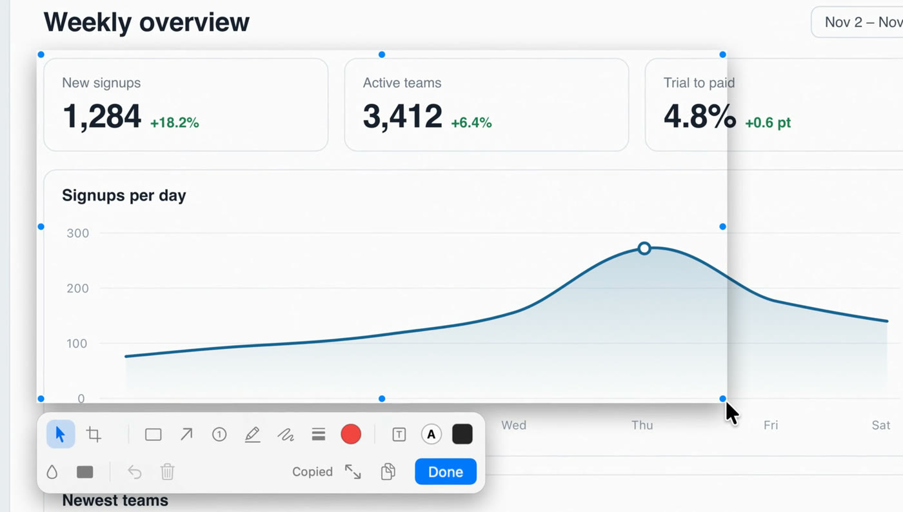
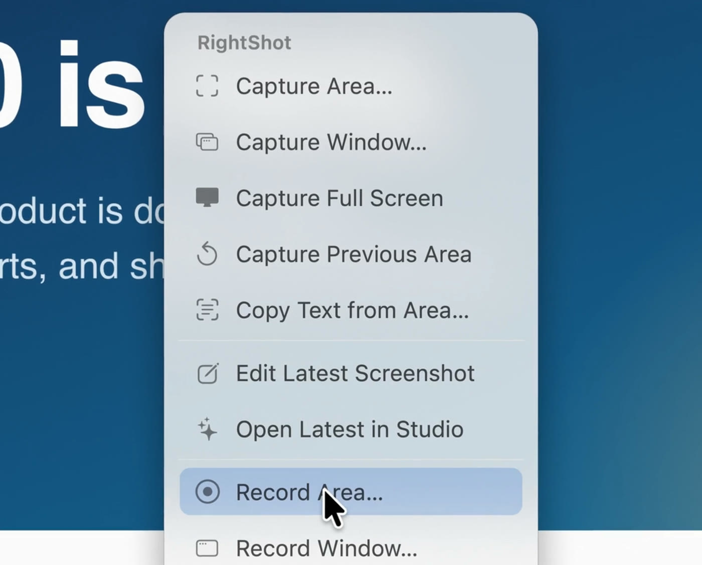
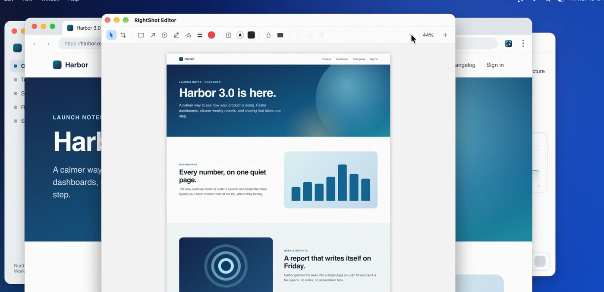
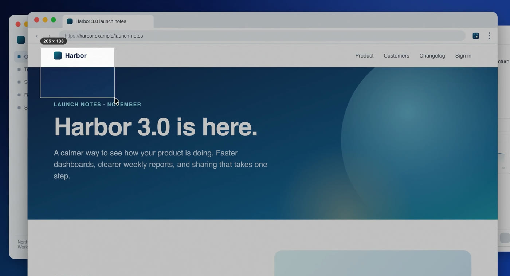
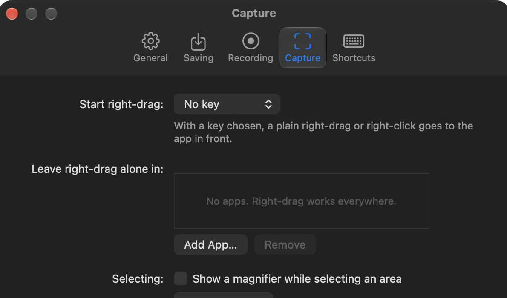
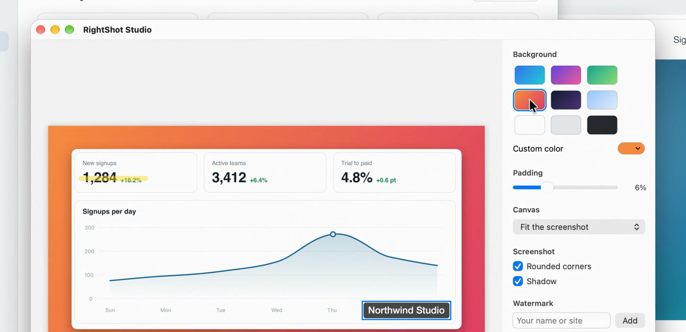

Meet

RightShotHold the right mouse button and drag. That's a screenshot. Mark it up where you took it, and it's already on your clipboard.
Capture the way
you already point
Other tools make you remember a shortcut, then aim. RightShot puts capture on the button your hand is already resting on. Right-drag over anything, let go, and it's copied.
A quick right-click still opens the menu you expect. Hold still instead, and RightShot's own menu opens beside the pointer.





Copy Text, free. Drag over anything on screen, even a picture or a video, and paste its words as plain text. Read on your Mac.
A card, or the shelf. After each capture, a card in the corner to copy, save, edit or drag. Or the shelf: your last 30 captures and recordings along the top of the screen. Click to copy, drag, Space to preview, pin.
Saved where you want it. Clipboard only, or Pictures/RightShot by default, your Desktop or any folder you choose.
Right-click any web page. In Chrome, Brave or Edge, right-click and choose RightShot, or press Option+Shift (Alt+Shift on Windows) with P for full page, E for section, A for area or V for visible page. Without the Mac app, a capture opens in a tab to mark up, copy or download.
Timed capture and a magnifier. Pixel-exact edges, the previous area again, and shortcuts you can change.
The formats you need. PNG or PDF for captures. MP4 or MOV at up to 60 frames per second for recordings.
RightShot Pro
Turn captures into finished work. Every Pro tool is free for 14 days, then yours with one purchase. No subscription.

- Recording Studio
- Zoom in where you click, a bigger cursor and click rings, and speed up or cut the moments the mouse is still. Trim, crop, frame on a background and export at 1080p for social.
- Camera bubble
- Show yourself in a corner of your recordings with your camera.
- Scrolling Capture
- Drag over a chat, a document or a long list in any app, scroll, and get one tall screenshot. Free in the browser extension.
- Save as GIF
- Turn a recording into a GIF that fits in a chat, a doc or a pull request.
- Create Guide
- Mark steps while you record, or collect screenshots, add captions, then save a numbered guide as a PDF or copy its steps as Markdown.
- Studio
- Present a screenshot on a gradient with padding, rounded corners, an adjustable shadow and your watermark.
- Auto Redact
- Finds faces, email addresses, phone, account and card numbers, and covers them in one click. On your Mac.
- Shelf search
- Find any screenshot on the shelf by the words in it, and add screenshots to a guide in one step.
Pricing
- Right-drag capture and the hold menu
- Area, window, full screen, previous area and timed capture
- The editor: boxes, arrows, steps, text, blur, redact and crop
- Screen and tab recording
- Browser extension: full page, section, area, scrolling area or visible page, and markup
- Copy Text: drag over any text on screen and paste it as plain text
- The capture card, auto-save and the shelf of your last 30
- Everything in RightShot
- Recording Studio: zoom on clicks, click rings, cut still moments, 1080p export
- Camera bubble and Save as GIF
- Create Guide, with Mark Step while recording
- Studio backgrounds, adjustable shadow and watermarks
- Auto Redact
- Scrolling Capture, in any app on your Mac
- Shelf search and Add to Guide
Download RightShot
Apple silicon and Intel Macs, macOS 26 or later.
FAQs
Will I lose my normal right-click?
No. A quick right-click goes straight to the app you're in, as it always has. RightShot only acts when you drag with the right button held, or hold it still for about half a second.
What permissions does RightShot need?
Screen Recording, so it can capture what's on screen. Right-drag also needs Accessibility, so RightShot can tell a right-drag from a right-click. You can capture from the menu bar with Screen Recording alone.
Does anything leave my Mac?
No. Captures, recordings, text recognition and Auto Redact all run on your Mac. There's no account, no analytics and no RightShot server. The browser extension sends only feedback you choose to send. Purchases go through the Mac App Store. See the privacy policy.
What's free and what's Pro?
Capturing, editing, recording, Copy Text, the shelf and the browser extension are free. Pro adds Recording Studio, the camera bubble, Scrolling Capture on the Mac, GIFs, Create Guide, Studio, Auto Redact and shelf search.
How does the free trial work?
Choose Start Free Trial on any Pro tool. You get every Pro tool for 14 days, and nothing is charged. When it ends, Pro tools ask you to unlock them, and everything free keeps working.
Does it work with a trackpad?
Yes. On supported trackpads, press with two fingers and drag. Capture Area in the menu bar works with a one-finger drag too.